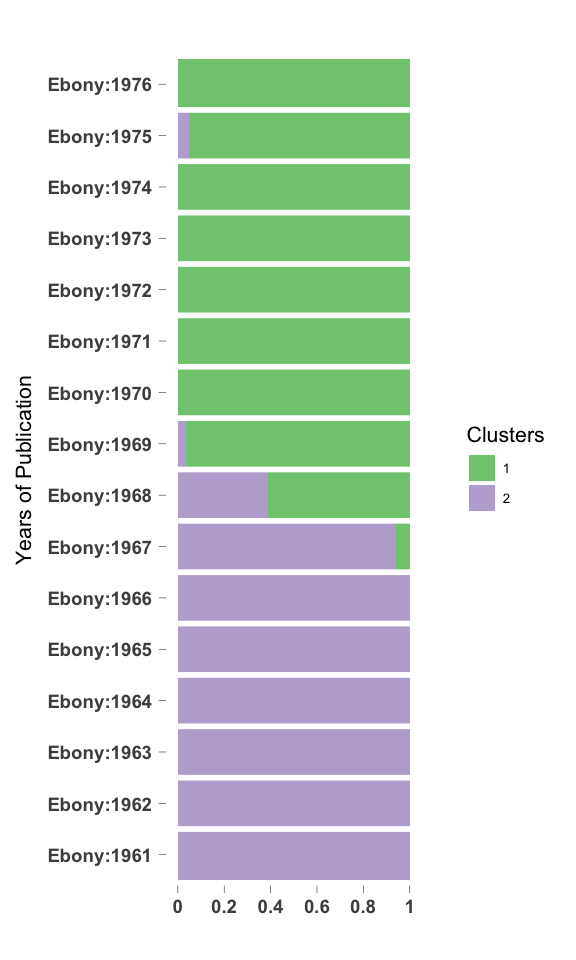
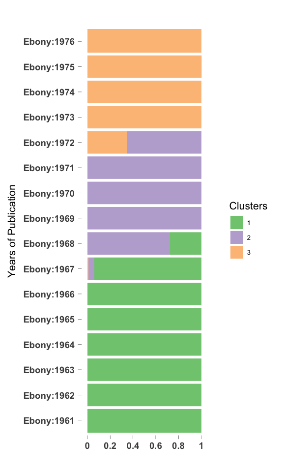

CountClust on Ebony articles
Kushal K Dey
4/11/2018
library(CountClust)## Loading required package: ggplot2library(ggplot2)Introduction
We apply CountClust on the word frequencies for yearly data from Ebony articles. In one case - we include terms like black and negro, the usage of which are known to have changed over the years. In other case, we remove these terms and see which terms affect the clustering now. Here we present the results for the first case study.
We first read the counts table of word occurrences in Ebony articles every year.
tab_ebony <- get(load("../output/table_word_frequencies_ebony.rda"))
all_words_ebony <- get(load("../output/all_words_ebony.rda"))Filtering words
Next we fit the CountClust model to the tabulated counts data. We first remove the words that occur in only one or two years of text data.
low_occur_words <- apply(tab_ebony, 2, function(x) return(sum(x[x!=0])))
tab2_ebony <- tab_ebony[, which(low_occur_words > 2)]Also remove the words that have just two characters as they are usually suffix-es or wrongly interpreted characters.
tab3_ebony <- tab2_ebony[, which(nchar(colnames(tab2_ebony)) > 2)]
tl_words <- which(substring(colnames(tab3_ebony), 1,2) == "tl")
tab4_ebony <- tab3_ebony[, -tl_words]Fitting CountClust
topic_clus <- list()
for(k in 2:4){
topic_clus[[k]] <- maptpx::topics(tab4_ebony, K=k, tol = 1)
}
save(topic_clus, file = "../output/Ebony_CountClust.rda")topic_clus <- get(load("../output/Ebony_CountClust.rda"))K = 2
STRUCTURE plot
omega <- topic_clus[[2]]$omega
annotation <- data.frame(
sample_id = paste0("X", c(1:NROW(omega))),
tissue_label = factor(rownames(omega),
levels = rownames(omega)))
rownames(omega) <- annotation$sample_id;
StructureGGplot(omega = omega,
annotation = annotation,
palette = RColorBrewer::brewer.pal(8, "Accent"),
yaxis_label = "Years of Publication",
order_sample = TRUE,
axis_tick = list(axis_ticks_length = .1,
axis_ticks_lwd_y = .1,
axis_ticks_lwd_x = .1,
axis_label_size = 7,
axis_label_face = "bold"))
Top driving words
out <- ExtractTopFeatures(topic_clus[[2]]$theta, top_features = 50, method = "poisson", options = "min")
driving_words <- t(apply(out$indices, c(1,2), function(x) return(rownames(topic_clus[[2]]$theta)[x])))
driving_words[1:20,]## [,1] [,2]
## [1,] "black" "negro"
## [2,] "blacks" "negroes"
## [3,] "watergate" "scobell"
## [4,] "percent" "lennie"
## [5,] "pollard" "blodgett"
## [6,] "poussaint" "pinchback"
## [7,] "cicely" "warmoth"
## [8,] "bicentennial" "bullard"
## [9,] "baraka" "levister"
## [10,] "blackowned" "lowe"
## [11,] "attica" "karam"
## [12,] "campy" "monnerville"
## [13,] "dellums" "javits"
## [14,] "nikki" "allensworth"
## [15,] "veeck" "god"
## [16,] "astrology" "drake"
## [17,] "liberation" "judo"
## [18,] "caucus" "groppi"
## [19,] "kareem" "zandt"
## [20,] "riles" "negros"K = 3
STRUCTURE plot
omega <- topic_clus[[3]]$omega
annotation <- data.frame(
sample_id = paste0("X", c(1:NROW(omega))),
tissue_label = factor(rownames(omega),
levels = rownames(omega)))
rownames(omega) <- annotation$sample_id;
StructureGGplot(omega = omega,
annotation = annotation,
palette = RColorBrewer::brewer.pal(8, "Accent"),
yaxis_label = "Years of Publication",
order_sample = TRUE,
axis_tick = list(axis_ticks_length = .1,
axis_ticks_lwd_y = .1,
axis_ticks_lwd_x = .1,
axis_label_size = 7,
axis_label_face = "bold"))
Top driving words
out <- ExtractTopFeatures(topic_clus[[3]]$theta, top_features = 50, method = "poisson", options = "min")
driving_words <- t(apply(out$indices, c(1,2), function(x) return(rownames(topic_clus[[3]]$theta)[x])))
driving_words[1:20,]## [,1] [,2] [,3]
## [1,] "negro" "barrows" "watergate"
## [2,] "negroes" "styron" "percent"
## [3,] "scobell" "sostre" "cicely"
## [4,] "lennie" "wcre" "bicentennial"
## [5,] "blodgett" "vvas" "erving"
## [6,] "warmoth" "otlier" "cosell"
## [7,] "bullard" "wliich" "dymally"
## [8,] "levister" "cleage" "khalilah"
## [9,] "karam" "wyche" "pam"
## [10,] "monnerville" "mantequilla" "mctear"
## [11,] "javits" "styrons" "aggrey"
## [12,] "allensworth" "rickeys" "abduljabbar"
## [13,] "god" "waddles" "welsing"
## [14,] "judo" "witli" "callahan"
## [15,] "groppi" "rickey" "spinners"
## [16,] "zandt" "boudreau" "guineabissau"
## [17,] "beaubien" "saperstein" "hbc"
## [18,] "listons" "bcds" "acupuncture"
## [19,] "negros" "hae" "tilmon"
## [20,] "davids" "wlien" "artis"K = 4
STRUCTURE plot
omega <- topic_clus[[4]]$omega
annotation <- data.frame(
sample_id = paste0("X", c(1:NROW(omega))),
tissue_label = factor(rownames(omega),
levels = rownames(omega)))
rownames(omega) <- annotation$sample_id;
StructureGGplot(omega = omega,
annotation = annotation,
palette = RColorBrewer::brewer.pal(8, "Accent"),
yaxis_label = "Years of Publication",
order_sample = TRUE,
axis_tick = list(axis_ticks_length = .1,
axis_ticks_lwd_y = .1,
axis_ticks_lwd_x = .1,
axis_label_size = 7,
axis_label_face = "bold"))
Top driving words
out <- ExtractTopFeatures(topic_clus[[4]]$theta, top_features = 50, method = "poisson", options = "min")
driving_words <- t(apply(out$indices, c(1,2), function(x) return(rownames(topic_clus[[4]]$theta)[x])))
driving_words[1:20,]## [,1] [,2] [,3] [,4]
## [1,] "negro" "acupuncture" "barrows" "keino"
## [2,] "negroes" "lockhart" "wcre" "mctear"
## [3,] "scobell" "waddles" "vvas" "callahan"
## [4,] "blodgett" "pollard" "wliich" "hela"
## [5,] "bullard" "artis" "mantequilla" "emmerich"
## [6,] "levister" "debolt" "styrons" "rander"
## [7,] "karam" "sids" "witli" "aphrodisiac"
## [8,] "monnerville" "debolts" "rickey" "marques"
## [9,] "god" "kurt" "bcds" "amniocentesis"
## [10,] "allensworth" "joetha" "wlien" "south"
## [11,] "javits" "haizlip" "ikon" "magicians"
## [12,] "judo" "dorgan" "hae" "moorman"
## [13,] "zandt" "wedgeworth" "kazan" "ndpa"
## [14,] "groppi" "noell" "neer" "haughton"
## [15,] "beaubien" "sterilizations" "havc" "demps"
## [16,] "listons" "pickard" "stniggle" "seretse"
## [17,] "davids" "holden" "holte" "brazilians"
## [18,] "preminger" "sef" "histor" "mineral"
## [19,] "mclendon" "cicely" "vvere" "noga"
## [20,] "narcisse" "wimer" "wdth" "deafblind"This R Markdown site was created with workflowr